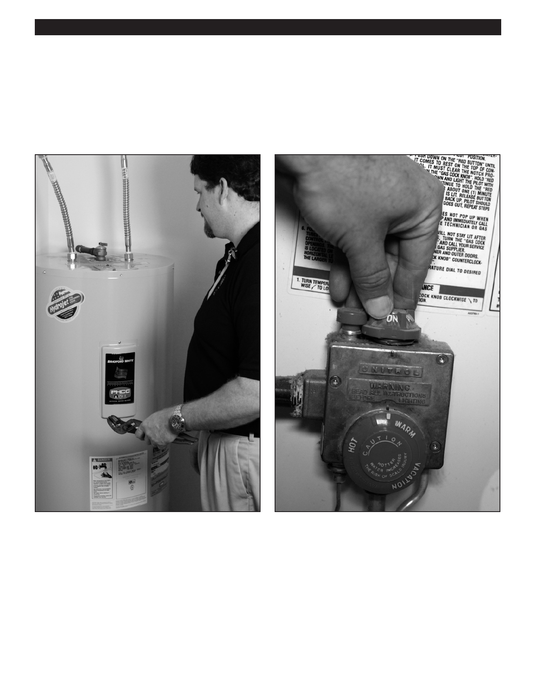

PA RT I C I PA N T R E S O U R C E G U I D E
Key Parts of a Water Heater
To better understand how a water heater functions, let’s look closer at its key parts.
The Thermostat
The thermostat senses when the tank drops below a certain pre-set temperature and causes the heating element (in an
electric water heater) or gas burner (in a gas water heater) to come on.
Electric Water Heaters: Here, the thermostat is like
Gas Water Heaters: The thermostat on a gas heater is an
a switch. The switch is on by default, but when the
integral part of the gas control valve and is located inside
temperature of the tank rises to a certain point, it expands
the tank. When the water temperature drops, the thermostat
and pushes a small metal rod against a dimpled piece of
signals the gas control valve to supply gas to the burner.
metal. That movement breaks the contact in the thermostat
However, before it allows gas to flow, a part called the
and stops current from flowing to the heating elements.
thermocouple must play its role. The thermocouple is a
safety device that senses when the pilot light is burning. If
the pilot goes out, the thermocouple signals the gas valve to
remain closed until the pilot light is relit.
82